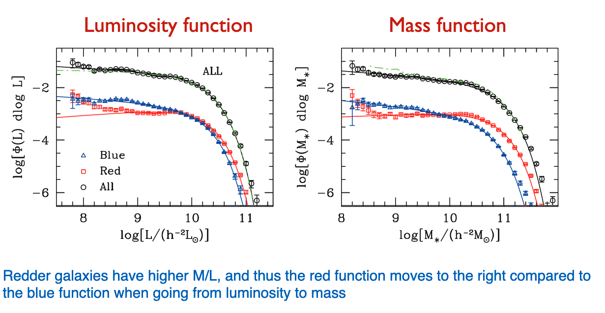
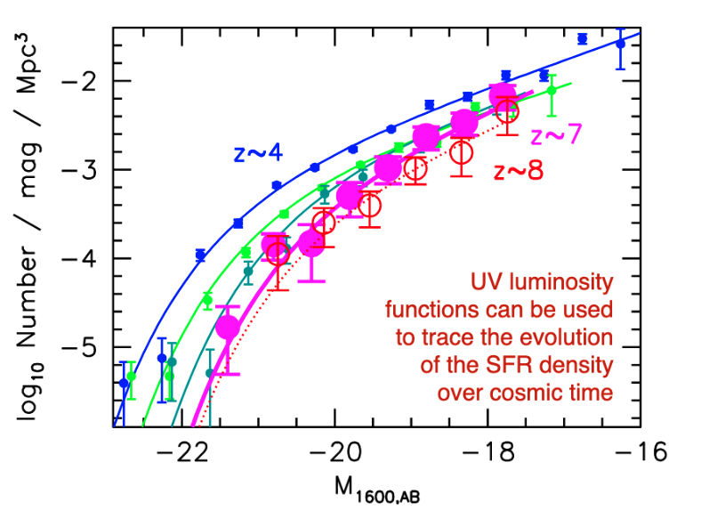

Statistical Properties of Galaxies
Contents
3. Statistical Properties of Galaxies¶
3.1. Luminosity Functions¶
For reasons we don’t totally understand, the distribution of galaxies as a function of luminosity and mass can be modeled as a Schecter function:
{kind=link}
\(L_\star\) is the inflection point of the function
\(\alpha\) is the faint end slope
\(\Phi_*\) is a normalization with units of number per volume
For faint galaxies, we have a power low behavior in \(\alpha\)
For bright galaxies, we have an exponential decline in the number of galaxies
In the local volume, the Milky Way is an \(L_\star\) galaxy of roughly \(10^{10} L_\odot\)
Note that individual galaxy types do not necessarily obey Schecter functions, but the sum of galaxies do.
{kind=link}
3.1.1. Challenges of Observation¶
You need distances – redshifts in particular for low \(z\) galaxies do reflect both the distance the peculiar motion
For the same luminosity and \(z\), low-surface brightness galaxies are harder to detect
Malmquist bias: brighter galaxies can be traced to larger distances than fainter galaxies. Solutions:
Only consider a range in luminosity and distance for which you are complete
Apply volume corrections for each observed luminosity
{kind=link}
{kind=link}
3.1.2. Luminosity Functions vs. Color¶
Redder galaxies dominate the bright end of the luminosity function – they’re the biggest and brightest. Blue galaixes dominate the faint end.
{kind=link}
{kind=link}
{kind=link}
3.2. Mass Functions¶
{kind=link}
Remember that redder galaxies have larger mass-to-light ratios. Thus, the red galaxy mass functions moves to the right compared to the blue function when moving from luminosity to mass space.
3.2.1. Evolution of the Mass Function¶
The mass function normalization changes in time.
We can use the mass function to trace the building of mass over cosmic history. Near \(z\) of \(2\) or so, the blue and red galaxy mass functions are nearly on top of each other, whereas they have bifurcated today.
{kind=link}
3.3. UV Luminosity Function¶
{kind=link}
We can trace the SFR density over cosmic time by looking at the UV luminosity function.
At high redshift, we have a low number density of galaxies because galaxies have not formed yet!
Integrating the UV luminosity function, we can get the SFR density over cosmic time.
SFR peaks near \(z\sim 2\) or \(3\), and declines steeply at high redshift. The peak epoch was around 2 or 3 billion years after Big Bang.
To make these measurements, we fit Schecter functions to UV luminosity functions at each redshift bin. We integrate for the total UV luminosity at that time, and use a stellar population model to infer the # of stars, masses, and SFRs.
{kind=link}